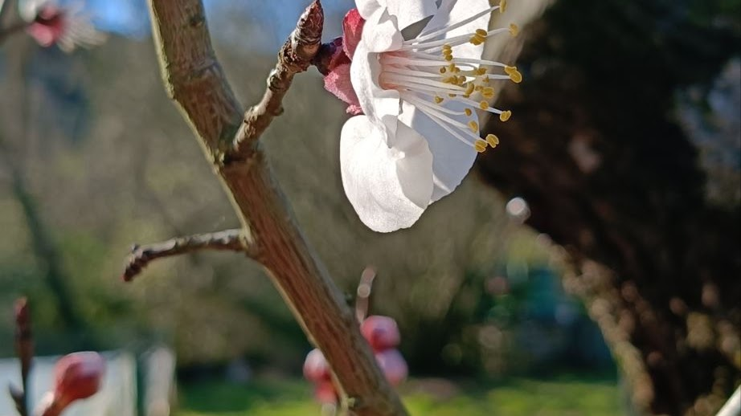
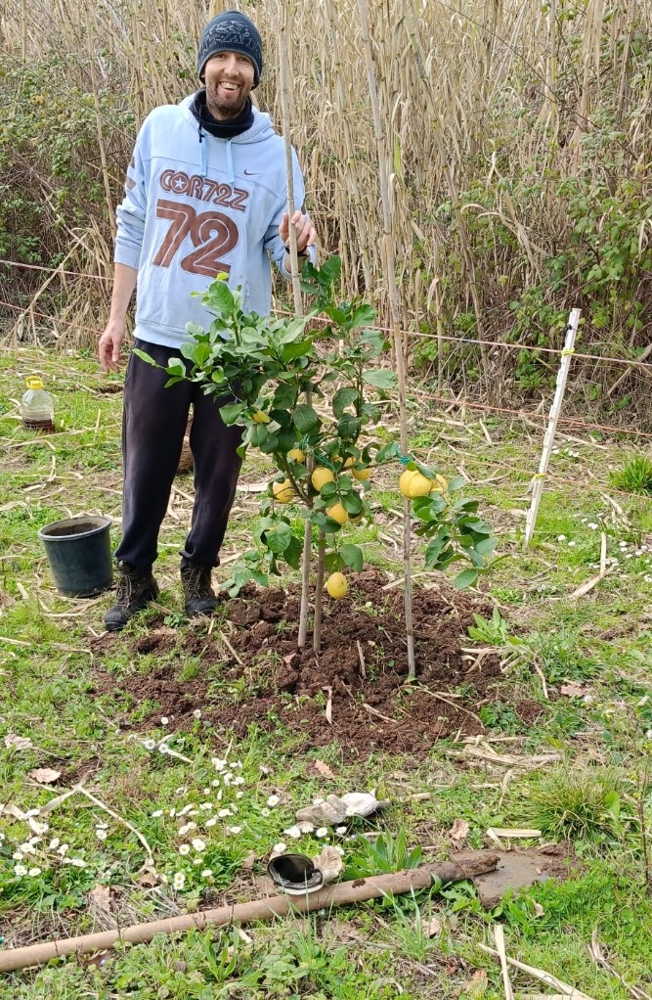
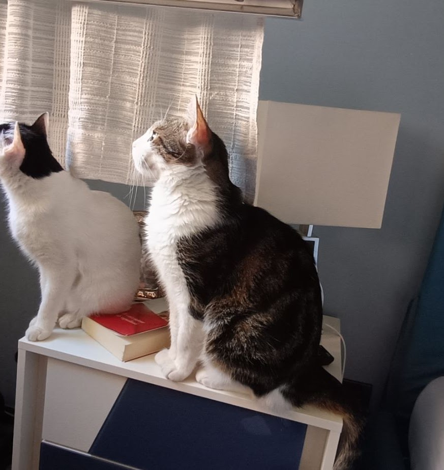
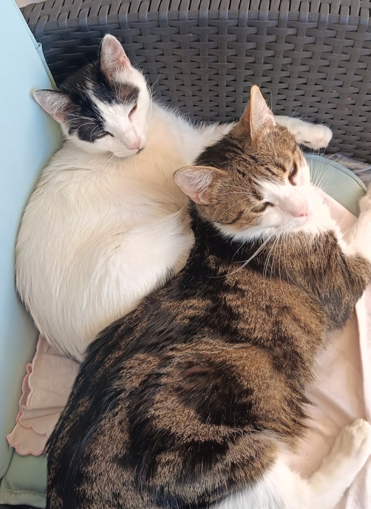
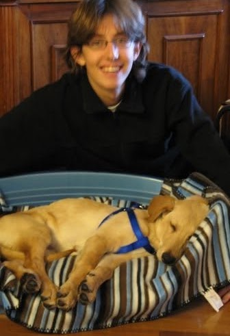
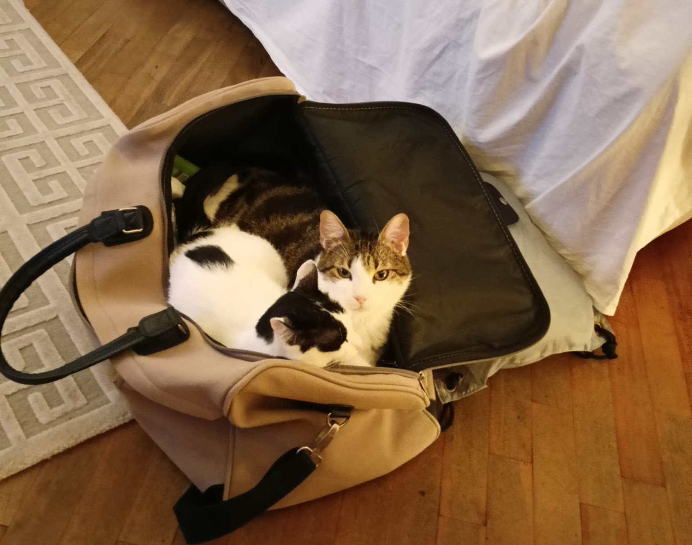
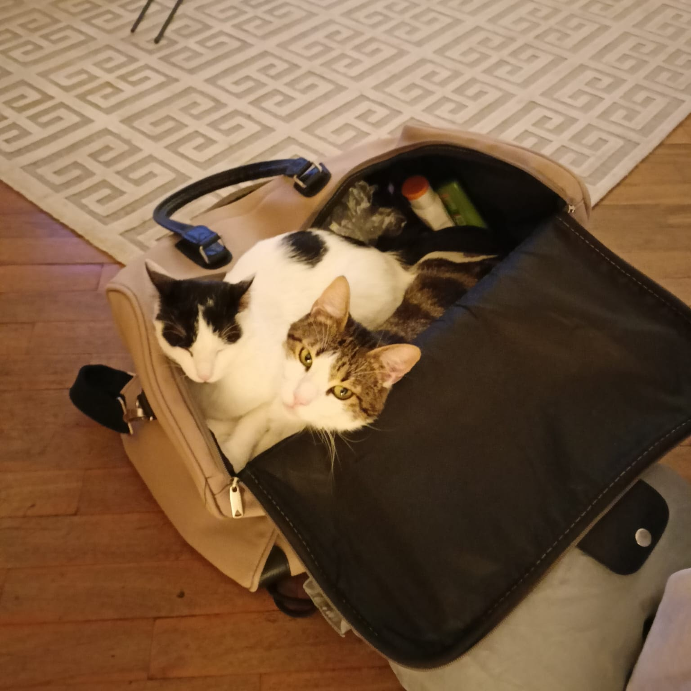

Il fiore che resiste
Dopo un inverno freddo,
un albicocco fiorisce lo stesso.
Dopo anni di fatica, sacrifici e spese, ci ritroviamo ad ammirare alberi che ci regalano frutta buona, non trattata. E ci insegnano a guardare le stagioni: come reagiscono al freddo, al caldo, ai cambiamenti del clima.
Quel fiore ha passato tutto l'inverno, ed è pronto per l'ape che si ripara tra i cespugli e aspetta le temperature giuste. Dall'impollinazione nasce il frutto, e il frutto lo assaggia chi ha piantato l'albero anni prima.
Piantare alberi da frutto è la mia piccola lotta al cambiamento climatico: meno inquinamento, più qualità sulla tavola.


Con mio padre
Due limoni,
vicini apposta.
Li abbiamo piantati uno accanto all'altro, nella speranza che si aiutino crescendo e che un giorno diventino piante grandi.
Poi si vedrà: limonate, marmellata di limoni, oppure pasta con tonno, olive e limone. Intanto speriamo che tengano al tempo e che stiano bene per il resto dei loro giorni.
La famiglia a quattro zampe
Romeo, Camilla
e prima di loro Spillo.

Romeo
Cinque anni, intelligentissimo, e odia essere preso in braccio. Anche solo toccato, a dire il vero.

Camilla
Quasi due anni, molto più concessiva: non graffia quasi mai e fa le fusa quando chiede da mangiare.

Spillo
Il primo cane della mia vita, desiderato per anni. Tredici anni insieme nei parchi, correndo, dimenticandoci come si sta male.
Quando viaggiamo facciamo a turno per dargli da mangiare e accudirli. Da quando stanno con noi hanno trovato l'America: viziati, ogni giorno, tutti i giorni.

